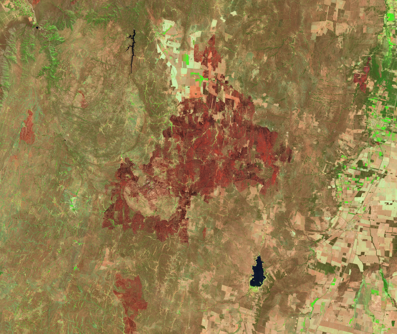
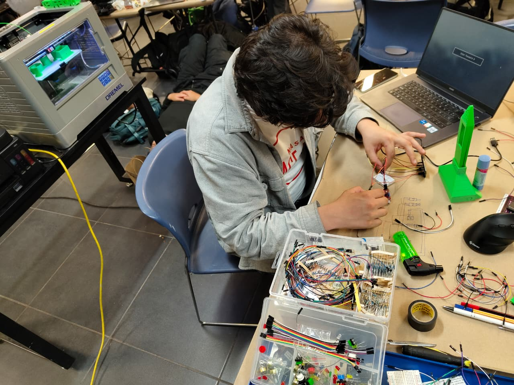
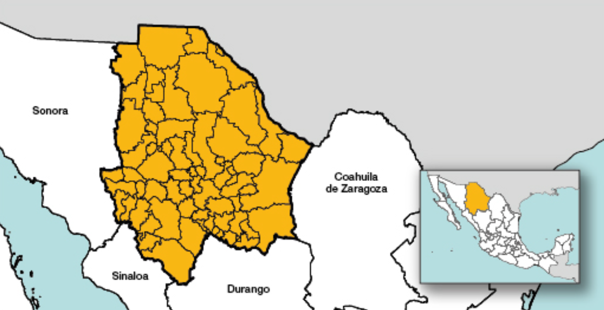

Interactive map
Explore areas of interest and filter hotspots by risk level and likely origin.

FireData · NASA Space Apps Challenge 2026
We combine historical satellite time series and on-the-ground environmental measurements to detect where fires occur, assess risk conditions, and estimate whether their origin is natural or human.
For more than 20 years, MODIS and VIIRS satellite sensors have recorded hotspots around the world. However, their data cannot be directly compared because of differences in spatial resolution, sensitivity, and observation times. As MODIS approaches the end of its service life and is replaced by VIIRS, the lack of a method to unify both time series threatens to fragment nearly a decade of history and leave emergency teams without a continuous climate record.
Three critical operational challenges add to this historical gap:

FireData unifies MODIS and VIIRS records to eliminate sensor discrepancies and prevent gaps in historical continuity.
Through monthly calibration, uncertainty estimates, and cross-validation, the platform enables consistent comparisons across time periods and builds a reliable calendar of thermal activity.

To mitigate satellite latency in critical areas, our IoT station collects temperature, humidity, wind, precipitation, and electrical activity directly in the field, calculating local ignition-risk indicators.
Station data provides continuous backup to detect anomalies and issue early warnings, even without direct satellite coverage.

Explore areas of interest and filter hotspots by risk level and likely origin.
Organize the unified history by year and month, view total records, or filter by natural or human origin.
Compare current conditions with historical reference values, highlighting anomalies and early warnings.
Export harmonized time series with uncertainty metrics and source-sensor metadata.
Will break down the likely origin of each hotspot and the environmental variables supporting the estimate.
Taking Chihuahua's forest-fire situation as a reference, the State Department of Rural Development (SDR) reported 289 forest fires so far this year, preliminarily affecting 43,206.76 hectares. The project proposes a pilot deployment in the Sierra de Chihuahua, combining an IoT station with satellite and meteorological backup.
FireData is developed in Chihuahua, Mexico, by a multidisciplinary team for the NASA Space Apps Challenge 2026.

MODIS and VIIRS time-series harmonization, calibration modeling, uncertainty calculation, and statistical validation.
Field weather-station design, sensor integration, and data-transmission protocols.
Web interface design for exploring risk maps, historical calendars, and environmental dashboards.
Orchestration of satellite sources, backup services, and geospatial data processing.
We are a multidisciplinary team from Chihuahua, Mexico, with experience in data science, web development, IoT hardware, and geospatial analysis. We are higher-education students from institutions including UACH, TECNM Delicias, and UTCH BIS. For the NASA Space Apps Challenge, our goal is to harmonize MODIS and VIIRS data and develop innovative solutions for forest-fire prevention and management in areas with limited satellite coverage, starting with a pilot in the Sierra de Chihuahua.